Welcome to Mathematics Education Courses
I greet you this day,
May you please review the:
(1.) General information regarding the course.
(2.) Course navigation links (all of them).
Comments, ideas, areas of improvement, questions, and constructive criticisms are welcome.
Thank you.
Samuel Dominic Chukwuemeka (SamDom For Peace) B.Eng., A.A.T, M.Ed., M.S
| Institution: | Western New Mexico University (WNMU) |
| Department: | Math and Computer Science |
| Courses and Course Outlines: |
MATH
1010: Math for School Teachers MATH 2132: Understanding Elementary Math I MATH 2133: Understanding Elementary Math II |
MATH 1010: Math for School Teachers
About Online Classes. Are Online Classes for You?
It depends.
Online classes are convenient.
Most of them are asynchronous, so you work at your own time/pace.
However, they demand a lot of time especially if you are struggling with the subject/course.
I am not trying to scare you. I am just being honest with you.
There are several factors that probably made you choose an online class: family demands, extended family
demands, and work demands among others.
I understand all these demands.
Hence, the course is set up for you to acquire the knowledge while maintaining a family – work
– school balance.
Be it as it may, I am more concerned with your successfully passing the course.
This includes:
(I.) Acquiring the knowledge: of the topics in Math for School Teachers
(eBook; Notes; Videos; Learning Aids: Help Me Solve This, View an Example; Multimedia
Resources among others)
(II.) Discussing the knowledge: (Discussion Board)
(III.) Applying the knowledge: (Project-based Learning), and
(IV.) Mastering the knowledge: (successfully completing the MyLab Math assignments).
Notable Notes about this Course
(1.) You will do a lot of work on your own in this course.
(
Did I just scare you? I hope not. I am just being honest with you.
The good thing is that I am here to help you.
But, you will do most of the work on your own.
)
Online course require very active independent student learners.
I provide the resources. You review those resources. We meet weekly during the Office Hours/Live
Sessions. I answer any questions you may have regarding the resources I provided.
This is the flipped-classroom approach.
You will spend a lot of time to read, view videos, view the multimedia resources (according to your
learning style) and solve problems. For those problems you cannot solve on your own,
that is when I come in and help you.
But do not think I am not doing any work. Trust me I will do a lot of work also to guide your learning.
I will maintain weekly Office Hours/Live Sessions to answer any questions.
I will answer any question you cannot solve anytime anyday, provided you send it to me on time and as my
schedule demands, but I'll respond to you. I do not ignore my students.
I will monitor and guide the discussions to ensure a safe, conducive, and inclusive learning
environment. I will provide comments to the DB posts and responses (some of them) accordingly.
I will grade discussions and provide feedback. I will review your project draft submissions and provide
feedback. I will grade your projects and provide feedback. That is also a lot of
work. So, we are doing a lot of work together.
If you are not prepared to do a lot of work/learning on your own, I advise you to please take this
course in-person.
The weekly Office Hours/Live Sessions are not required. But they are highly recommeded. The link to the
Zoom session is provided for you in the Canvas course.
If the days/times do not suit your schedule and you need to have a live session with me, please send an
email to me with your available days and times. I shall check my schedule and respond.
How did I set up this course to help you succeed?
Please note that I set it up this way to help you succeed while ensuring that I provide RSI–QM
(Regular and Substantive Interaction – Quality Matters) with my students according to
the United States Department of Education (USDOE) regulations.
(2.) Assessments: There are three types of assessments for this course:
(a.) MyLab Math (MLM) also known as MyMath Lab assignments: This is 60% of your final grade.
(i.) Every assignment is open for you from the first day of class. There are many assignments for you to
do. But you get the credit for it. If you complete all the MLM assignments with a
100%, you make a 60% in the course. I do not pick and choose questions when assigning the sections
because I want you to attempt all the various types/forms of questions for each
section. It is a lot of work. But you get the credit for it if you complete it successfully. It will be
good if you make a 100% on all of them, but you must not. It depends on the grade
you want for the course. Please review the Grading example in your course syllabus.
(ii.) Each section has two due dates: initial due date and final due date. It is not timed. However, it
has due dates.
(iii.) If there is any section you are unable to complete by the first due date, you may continue to
work on it, and try to complete it by the final due date without any penalty.
(iv.) If there is any section you did not attempt by the first due date, you will earn a zero score in
the Canvas gradebook when grades are updated. When you
attempt that section and earn a grade, that grade will be updated the next time grades are updated.
(v.) Grades for MLM assignments are updated in the Canvas gradebook biweekly (every other week).
(vi.) Many questions on an MLM assignment have learning aids. The learning aids include: Help Me Solve
This and View an Example among others. You are encouraged to use these learning aids.
The learning aids typically uses one approach/method to solve the question. If you do not understand
that approach/method, that is where I come in. Please contact me with the
question/question ID and I'll use another approach to explain the question so you may understand.
Further, the solved examples on my websites (as listed in the Pacing Guides) contain
some of the questions on your MLM assignments.
(vi.) There are unlimited attempts for your MLM assignments. Typically, if you do a certain type of
question three times without getting it correct, that question will be marked as incorrect.
But, no worries. Please click on Similar Question usually at the bottom right corner. If you get
a similar question correct, that question will be marked correct, and you get the credit for it.
Please use only a computer (laptop or desktop; no tablets, no smartphones) with internet access.
(viii.) The final due date for all MLM assignments is the last day of class, or sometimes the day
following the last day of class (depending on the day).
Please review the course syllabus for the exact date.
(ix.) After the final due date, please do not ask for an extension.
(x.) All MLM assignments are done in the Pearson learning management system via Canvas learning
management system.
(b.) Project-based assessment: Measurements and Units Project: This is 10% of your final grade.
(i.) Please review the requirements, instructions, directions, and the projects from my previous
students.
(ii.) If your application meets the project requirements, you should begin to work on your draft. It is
highly recommeded that you submit your draft to me as soon as possible. Review your
course syllabus for the due date to submit drafts.
(iii.) The project has two due dates as noted in the Tentative Class Schedule on your course syllabus
and in the Pacing Guide. After the first due date, a zero grade will be entered in the Canvas gradebook
for
any student who has not satisfactorily completed the project, regardless of whether I am reviewing your
draft or not.
(iv.) You may continue to work on your project after the first due date and submit it by the final due
date. After the final due date, please do not request for an extension.
(v.) All projects (not drafts) are submitted in the appropriate area (forum) in the Canvas learning
management system.
(c.) Discussion Board (DB) assessment: This is 30% of your grade.
(i.) Please review the Discussion Board in the course navigation link.
(ii.) The course is 16 weeks. Each week has a DB assessment (besides the week of Thanksgiving holiday).
This implies there are 15 DB assessments.
(iii.) Each DB assessment requires a DB Post and a DB Response. At least one response to the initial
post of your fellow student is required.
(iv.) Each DB assessment is 2% of your grade. The grading rubric is provided for you accordingly.
(v.) There is only one due date for the DB Post and only one due date for the DB Response. Any work past
any of those due dates attracts a penalty according to the grading rubric.
Let me explain. It is important that you submit your initial posts on time (by Thursday) so your
colleagues will have some time to respond to your post. Some students are very busy during the
weekends. They might not be able to log in during weekends. Hence, they would like to complete the DB
assessments on time. I am considering those students too.
(vi.) Let me explain the reason for having only one due date for each of DB Post and DB Response. Most
students, typically do not continue the discussion past the week that it is due. They
move on to the next discussion. Hence, if a student posts or responds past the due date, that post or
response may not be read by another student.
What is the purpose of discussing with your colleagues if they will not read what you wrote? Do you
understand what I mean?
(3.) I believe in giving my students a lot of opportunities to succeed: unlimited attempts for the MLM
assignments; two due dates for MLM assignments; and two due dates for the project among
others including my availability and willingness to answer your questions.
In that regard, I do not believe in bonus points. I do not believe in extra credit. Only the three types
of assessments are the graded assessments.
Please do not ask for bonus points.
Please do not ask for extra credit.
Please do not ask for the grading to be curved. (normal distribution curve).
Please do not ask for re-dos after the project is graded. Those re-dos should be drafts. But once you
submit your project, that is it.
Please do not ask for re-dos after the DB assessment is graded. Attend Office Hours/Live Sessions and
ask questions.
Please ask questions instead.
What should you do?
What are some tips for succeeding in the class?
(4.) You control 60% of your final grade.
I control 40% of your final grade.
(a.) You are the one to decide the grade you want in the class. Make 100% on what you control: the MLM
assignments; you earn a 60%...a D
Then, work with me by submitting your draft for the project on time. Work with me and address any issues
till I give you the green light to submit your project...that should give you
a 100% (in most cases)...which is 10% of your final grade. You now have: 60% + 10% = 70%...a C
Follow all the DB Requirements. Submit your initial post on time and address any comments I make as
applicable. Even if I do not make any comments to your post, review the comments I make
to the posts and/or responses of your colleagues. You can even address the comments I make to the post
of your colleague as a substantive response, if applicable. Contact me via email
and/or Live Sessions/Office Hours for any comment you do not understand. You can make enough points on
the DB assessment to earn an A. in the course.
Making a grade of D is basically your entire/complete decision to make.
You can also make a grade of A or B or C by reviewing my comments to your
colleagues (based on the DB), and also
based on the project samples and requirements provided to you. I understand some of you have busy
schedules, hence your choosing to take an online class. But, please know that you can
email me your available days and times. I will check my schedule and respond. We can work out something
even if the day and time of the Live Sessions/Office Hours is not convenient for you.
(b.) Let us discuss how you can make a 100% on the MLM assignments:
The MLM assignments consists of 45 main sections: 60 sections: 1088 questions.
You have about 116 days (including Thanksgiving week) and about 109 days (excluding Thanksgiving week)
to complete 1088 questions.
Please note that some questions have children (sub-questions).
So, if we count each question and sub-question, the number is higher.
But you have about 116 days to complete all the questions.
For 116 days: (Thanksgiving week is included)
$\dfrac{1088}{116} = 9.379310345 \approx 10$ (rounded up) questions per day.
If you complete 10 questions (including any sub-questions) per day, you will complete all MLM
assignments in about 110 days.
If you complete 20 questions (including any sub-questions) per day, you will complete all MLM
assignments in about 55 days.
For 109 days: (Thanksgiving week is excluded; however, you are highly recommended to practice/solve Math
questions daily to master the concepts/topics)
$\dfrac{1088}{109} = 9.981651376 \approx 10$ (rounded up) questions per day.
If you complete 10 questions (including any sub-questions) per day, you will complete all MLM
assignments in about 109 days.
If you complete 20 questions (including any sub-questions) per day, you will complete all MLM
assignments in about 55 days.
It is doable. It just requires your time and effort.
There is no graded work due during Thanksgiving week. Hence, you do not see any work in Week 15 of the Pacing Guide
However, it is important you practice Math daily to master it.
(c.) Please make sure you do all these assignments yourself.
(i.) Use the Learning Aids provided for you by Pearson MLM.
(ii.) Use my websites (especially the Solved Examples ... as noted in the Pacing Guides). I have
solved, and I am still solving your MLM questions on my websites.
My explanations of the solutions are clear, as testified by some of my students. Please let me know
otherwise.
(iii.) Do not use online calculators, even my own online calculators.
Mr. C is even asking you not to use his own online calculators.
Here's the reason: if a calculator solves the question for you, did you really learn to solve the
question?
You probably know the websites that have online calculators. I do not think you learn the
topics/concepts
if you use such online calculators.
(iv.) Do not use the mobile Mathematics apps that will solve the questions for you. You probably know
the mobile apps including the one where you take the picture of the question with your
smartphone and it gives the answer. I do not think you learn the topics/concepts if you use such mobile
apps.
MyLab Math (MLM) Registration and Resources (eText and Multimedia Resources)
If you do not have the access code, you may get a temporary access without payment for 14 days. Please review the directions.
As specified in the course syllabus, the eText comes with the Access code.
The access code gives you access to the MyLab Math (MLM) assignments.
The access code contains the eText.
The access code also contains an accessible eText (for students who require
accommodation).
So, you have an electronic textbook. Hence, a physical/hard copy textbook is not required.
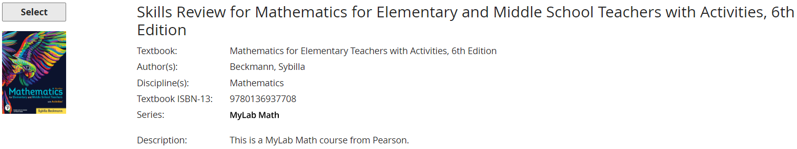
Recap:
(1.) The access code is required.
This is because you use the access code to access the MLM assignments.
(2.) The access code contains the eText/accessible eText.
(3.) The hard copy/physical textbook is not required. The hard copy does not give you access to the MLM assignments. So, it is not required.
Access the eText/accessible eText
Step 1:
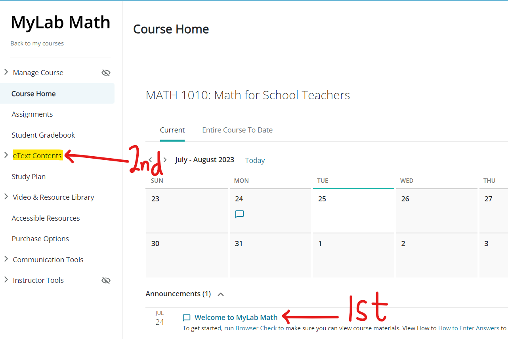
Step 2:
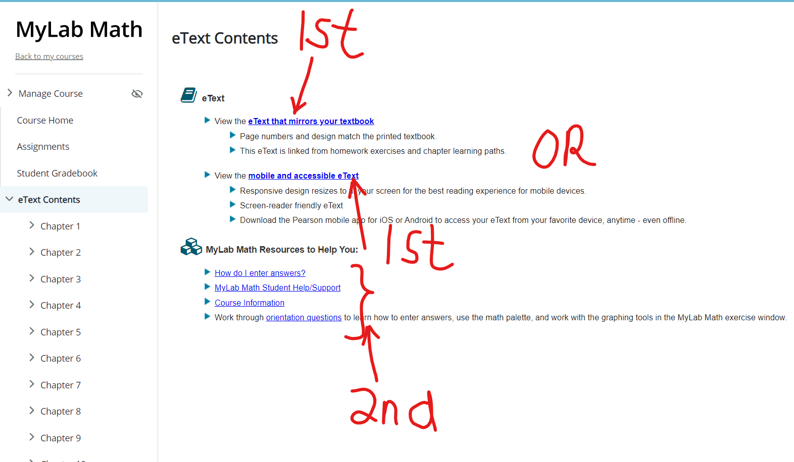
Step 3:
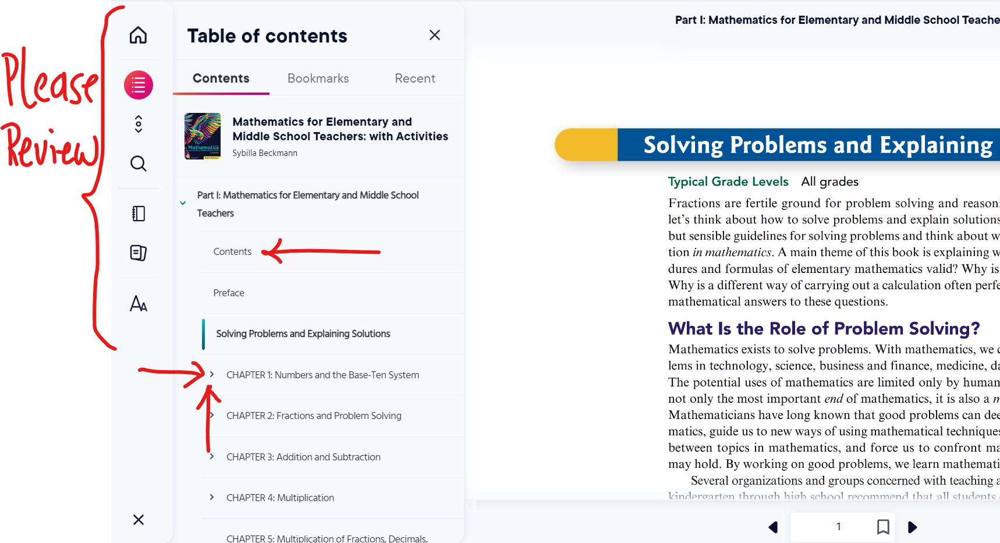
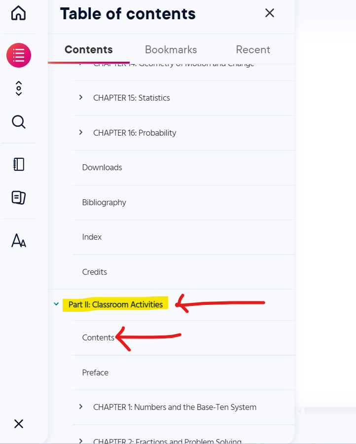
Access the Multimedia Resources
Step 4:
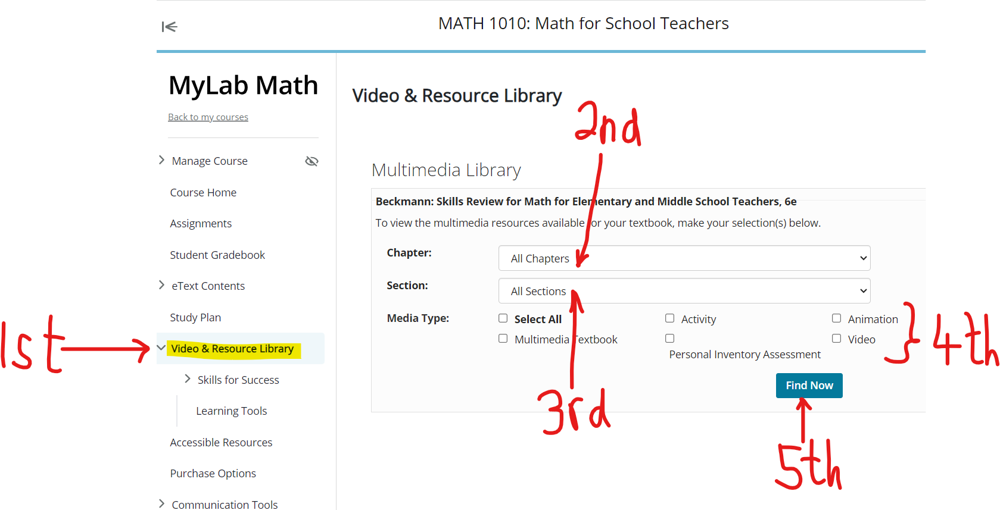
MATH 2132: Understanding Elementary Math I
About Online Classes. Are Online Classes for You?
It depends.
Online classes are convenient.
Most of them are asynchronous, so you work at your own time/pace.
However, they demand a lot of time especially if you are struggling with the subject/course.
I am not trying to scare you. I am just being honest with you.
There are several factors that probably made you choose an online class: family demands, extended family
demands, and work demands among others.
I understand all these demands.
Hence, the course is set up for you to acquire the knowledge while maintaining a family – work
– school balance.
Be it as it may, I am more concerned with your successfully passing the course.
This includes:
(I.) Acquiring the knowledge: of the topics in Math for School Teachers
(eBook; Notes; Videos; Learning Aids: Help Me Solve This, View an Example; Multimedia
Resources among others)
(II.) Discussing the knowledge: (Discussion Board)
(III.) Applying the knowledge: (Project-based Learning), and
(IV.) Mastering the knowledge: (successfully completing the MyLab Math assignments).
Notable Notes about this Course
(1.) You will do a lot of work on your own in this course.
(
Did I just scare you? I hope not. I am just being honest with you.
The good thing is that I am here to help you.
But, you will do most of the work on your own.
)
Online course require very active independent student learners.
I provide the resources. You review those resources. We meet weekly during the Office Hours/Live
Sessions. I answer any questions you may have regarding the resources I provided.
This is the flipped-classroom approach.
You will spend a lot of time to read, view videos, view the multimedia resources (according to your
learning style) and solve problems.
For those problems you cannot solve on your own, that is when I come in and help you.
But do not think I am not doing any work. Trust me I will do a lot of work also to guide your learning.
I shall maintain weekly Office Hours/Live Sessions to answer any questions.
I shall answer any question you cannot solve anytime anyday, provided you send it to me on time and as
my
schedule demands, but I'll respond to you. I do not ignore my students.
I shall monitor and guide the discussions to ensure a safe, conducive, and inclusive learning
environment.
I shall provide comments to the DB posts and responses (some of them) accordingly.
I shall grade discussions and provide feedback.
I shall review your project draft submissions and provide feedback.
I shall grade your projects and provide feedback.
That is also a lot of work. So, we are doing a lot of work together.
If you are not prepared to do a lot of work/learning on your own, I advise you to please take this
course in-person.
The weekly Office Hours/Live Sessions are not required. But they are highly recommeded.
The link to the Zoom session is provided for you in the Canvas course and in your course syllabus.
If the days/times do not suit your schedule and you need to have a live session with me, please send an
email to me with your available days and times. I shall check my schedule and respond.
How did I set up this course to help you succeed?
Please note that I set it up this way to help you succeed while ensuring that I provide RSI–QM
(Regular and Substantive Interaction – Quality Matters) with my students according to
the United States Department of Education (USDOE) regulations.
(2.) Assessments: There are three types of assessments for this course:
(a.) MyLab Math (MLM) also known as MyMath Lab assignments: This is 60% of your final grade.
(i.) Every assignment is open for you from the first day of class.
There are many assignments for you.
But you get the credit for it.
If you complete all the MLM assignments with a 100%, you make a 60% in the course.
I do not pick and choose questions when assigning the sections because I want to expose you to all the
various types/forms of questions for each
section.
It is a lot of work. But you get the credit for it if you complete it successfully.
It will be good if you make a 100% on all of them, but you must not. It depends on the grade
you want for the course. Please review the Grading example in your course syllabus.
(ii.) Each section has two due dates: initial due date and final due date.
It is not timed. However, it has due dates.
(iii.) If there is any section you are unable to complete by the first due date, you may continue to
work on it, and try to complete it by the final due date without any penalty.
(iv.) If there is any section you did not attempt by the first due date, you will earn a zero score in
the Canvas gradebook when grades are updated. When you
attempt that section and earn a grade, that grade will be updated the next time grades are updated.
(v.) Grades for MLM assignments are updated in the Canvas gradebook biweekly (every other week).
(vi.) Several questions on an MLM assignment have learning aids.
The learning aids include: Help Me Solve This and View an Example among others.
You are encouraged to use these learning aids.
The learning aids typically uses one approach/method to solve the question.
If you do not understand that approach/method, that is where I come in.
Please Ask My Instructor and/or contact me with the question/question ID.
I shall use another approach to explain the question so you may understand.
Further, the solved examples on my websites (as listed in the Pacing Guides) contain some of the
questions on your MLM assignments.
(vi.) There are unlimited attempts for your MLM assignments.
Typically, if you do a certain type of question three times without getting it correct, that question
will be marked as incorrect.
But, no worries. Please click on Similar Question usually at the bottom right corner.
If you get a similar question correct, that question will be marked correct, and you get the credit for
it.
Please use only a computer (laptop or desktop; no tablets/iPads, no smartphones) with internet
access.
(viii.) The final due date for all MLM assignments is the last day of class, or sometimes the day
following the last day of class (depending on the day).
Please review the course syllabus for the exact date.
(ix.) After the final due date, please do not ask for an extension.
(x.) All MLM assignments are done in the Pearson learning management system via Canvas learning
management system.
(b.) Project-based assessment: Number Theory Project: This is 10% of your final grade.
(i.) Please review the requirements, instructions, directions, and the projects from my previous
students.
(ii.) If your application meets the project requirements, you should begin to work on your draft. It is
highly recommeded that you submit your draft to me as soon as possible. Review your
course syllabus for the due date to submit drafts.
(iii.) The project has two due dates as noted in the Tentative Class Schedule on your course syllabus
and in the Pacing Guide. After the first due date, a zero grade will be entered in the Canvas gradebook
for
any student who has not satisfactorily completed the project, regardless of whether I am reviewing your
draft or not.
(iv.) You may continue to work on your project after the first due date and submit it by the final due
date. After the final due date, please do not request for an extension.
(v.) All projects (not drafts) are submitted in the appropriate area (forum) in the Canvas learning
management system.
(c.) Discussion Board (DB) assessment: This is 30% of your grade.
(i.) Please review the Discussion Board in the course navigation link.
(ii.) The course is 16 weeks. Each week has a DB assessment (besides the week of Thanksgiving holiday).
This implies there are 15 DB assessments.
(iii.) Each DB assessment requires a DB Post and a DB Response. At least one response to the initial
post of your fellow student is required.
(iv.) Each DB assessment is 2% of your grade. The grading rubric is provided for you accordingly.
(v.) There is only one due date for the DB Post and only one due date for the DB Response. Any work past
any of those due dates attracts a penalty according to the grading rubric.
Let me explain. It is important that you submit your initial posts on time (by Thursday) so your
colleagues will have some time to respond to your post. Some students are very busy during the
weekends. They might not be able to log in during weekends. Hence, they would like to complete the DB
assessments on time. I am considering those students too.
(vi.) Let me explain the reason for having only one due date for each of DB Post and DB Response. Most
students, typically do not continue the discussion past the week that it is due. They
move on to the next discussion. Hence, if a student posts or responds past the due date, that post or
response may not be read by another student.
What is the purpose of discussing with your colleagues if they will not read what you wrote? Do you
understand what I mean?
(3.) I believe in giving my students a lot of opportunities to succeed: unlimited attempts for the MLM
assignments; two due dates for MLM assignments; and two due dates for the project among
others including my availability and willingness to answer your questions.
In that regard, I do not believe in bonus points. I do not believe in extra credit. Only the three types
of assessments are the graded assessments.
Please do not ask for bonus points.
Please do not ask for extra credit.
Please do not ask for the grading to be curved. (normal distribution curve).
Please do not ask for re-dos after the project is graded. Those re-dos should be drafts. But once you
submit your project, that is it.
Please do not ask for re-dos after the DB assessment is graded. Attend Office Hours/Live Sessions and
ask questions.
Please ask questions instead.
What should you do?
What are some tips for succeeding in the class?
(4.) You control 60% of your final grade.
I control 40% of your final grade.
(a.) You are the one to decide the grade you want in the class. Make 100% on what you control: the MLM
assignments; you earn a 60%...a D
Then, work with me by submitting your draft for the project on time. Work with me and address any issues
till I give you the green light to submit your project...that should give you
a 100% (in most cases)...which is 10% of your final grade. You now have: 60% + 10% = 70%...a C
Follow all the DB Requirements. Submit your initial post on time and address any comments I make as
applicable. Even if I do not make any comments to your post, review the comments I make
to the posts and/or responses of your colleagues. You can even address the comments I make to the post
of your colleague as a substantive response, if applicable. Contact me via email
and/or Live Sessions/Office Hours for any comment you do not understand. You can make enough points on
the DB assessment to earn an A. in the course.
Making a grade of D is basically your entire/complete decision to make.
You can also make a grade of A or B or C by reviewing my comments to your
colleagues (based on the DB), and also
based on the project samples and requirements provided to you. I understand some of you have busy
schedules, hence your choosing to take an online class. But, please know that you can
email me your available days and times. I will check my schedule and respond. We can work out something
even if the day and time of the Live Sessions/Office Hours is not convenient for you.
(b.) Let us discuss how you can make a 100% on the MLM assignments:
The MLM assignments consists of 21 main sections: 52 sections: 1276 questions.
You have about 116 days (including Thanksgiving week) and about 109 days (excluding Thanksgiving week)
to complete 1276 questions.
Please note that some questions have children (sub-questions).
So, if we count each question and sub-question, the number is higher.
But you have about 116 days to complete all the questions.
For 116 days: (Thanksgiving week is included)
$\dfrac{1276}{116} = 11$ questions per day.
If you complete 11 questions (including any sub-questions) per day, you will complete all MLM
assignments in 116 days.
If you complete 20 questions (including any sub-questions) per day, you will complete all MLM
assignments in about 64 days.
For 109 days: (Thanksgiving week is excluded; however, you are highly recommended to practice/solve Math
questions daily to master the concepts/topics)
$\dfrac{1276}{109} = 11.70642202 \approx 12$ (rounded up) questions per day.
If you complete 12 questions (including any sub-questions) per day, you will complete all MLM
assignments in about 107 days.
If you complete 20 questions (including any sub-questions) per day, you will complete all MLM
assignments in about 64 days.
It is doable. It just requires your time and effort.
There is no graded work due during Thanksgiving week. Hence, you do not see any work in
Week 15 of the Pacing Guide
However, it is important you practice Math daily to master it.
(c.) Please make sure you do all these assignments yourself.
(i.) Use the Learning Aids provided for you by Pearson MLM.
(ii.) Use my websites (especially the Solved Examples ... as noted in the Pacing Guides). I have
solved, and I am still solving your MLM questions on my websites.
My explanations of the solutions are clear, as testified by some of my students. Please let me know
otherwise.
(iii.) Do not use online calculators, even my own online calculators. Mr. C is even asking you not to
use his own online calculators.
Here's the reason: if a calculator solves the question for you, did you really learn to solve the
question?
You probably know the websites that have online calculators. I do not think you learn the
topics/concepts if you use such online calculators.
(iv.) Do not use the mobile Mathematics apps that will solve the questions for you. You probably know
the mobile apps including the one where you take the picture of the question with your
smartphone and it gives the answer. I do not think you learn the topics/concepts if you use such mobile
apps.
MyLab Math (MLM) Registration and Resources (eText and Multimedia Resources)
If you do not have the access code, you may get a temporary access without payment for 14 days. Please review the directions.
As specified in the course syllabus, the eText comes with the Access code.
The access code gives you access to the MyLab Math (MLM) assignments.
The access code contains the eText.
The access code also contains an accessible eText (for students who require
accommodation).
So, you have an electronic textbook. Hence, a physical/hard copy textbook is not required.

Recap:
(1.) The access code is required.
This is because you use the access code to access the MLM assignments.
(2.) The access code contains the eText/accessible eText.
(3.) The hard copy/physical textbook is not required. The hard copy does not give you access to the MLM
assignments. So, it is not required.
Access the eText/accessible eText
Step 1:
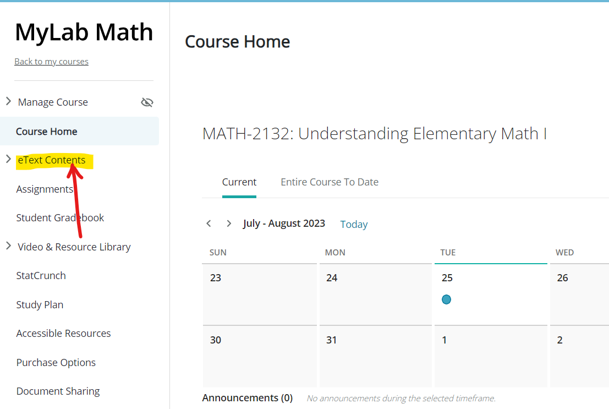
Step 2:

Step 3:
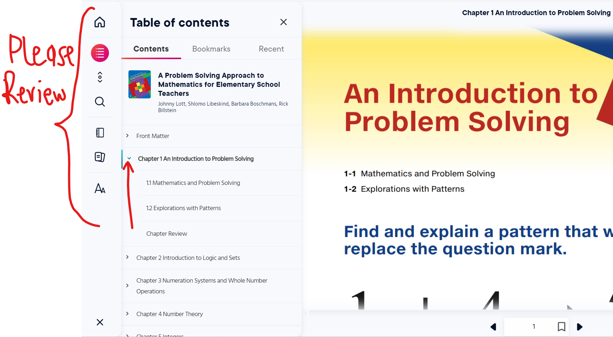

Access the Multimedia Resources
Step 4:
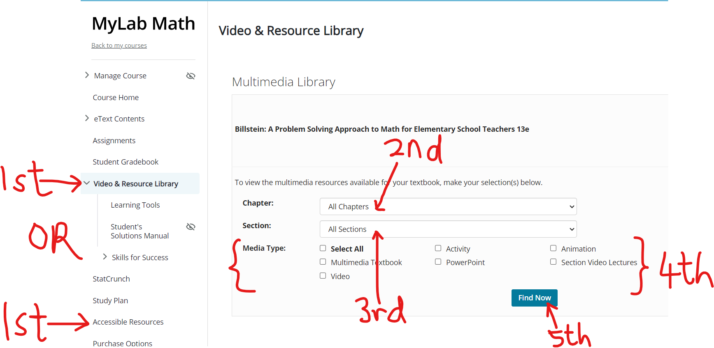
MATH 2133: Understanding Elementary Math II
Welcome Videos: Welcome to Our Class: MATH 2133: Understanding Elementary Math II
Play the video with closed captionining
OR
Play the video without closed captionining
Transcript to 1st Video: Main Welcome
Play the video with closed captionining
OR
Play the video without closed captionining
2nd Video: Types of Assessments
Transcript to 2nd Video: Types of Assessments
About Online Classes: Taking MATH 2133 with Mr. C
It depends.
Online classes are convenient.
Most of them are asynchronous, so you work at your own time/pace.
However, they demand a lot of time especially if you are struggling with the subject/course.
I am not trying to scare you. I am just being honest with you.
There are several factors that probably made you choose an online class: family demands, extended family
demands, and work demands among others.
I understand all these demands.
Hence, the course is set up for you to acquire the knowledge while maintaining a family – work
– school balance.
Be it as it may, I am more concerned with your successfully passing the course.
This includes:
(I.) Acquiring the knowledge: of the topics in Math for School Teachers
(eBook; Notes; Videos; Learning Aids: Help Me Solve This, View an Example; Multimedia
Resources among others)
(II.) Discussing the knowledge: (Discussion Board)
(III.) Applying the knowledge: (Project-based Learning), and
(IV.) Mastering the knowledge: (successfully completing the MyLab Math assignments).
Notable Notes about this Course
(1.) You will do a lot of work on your own in this course.
(
Did I just scare you? I hope not. I am just being honest with you.
The good thing is that I am here to help you.
But, you will do most of the work on your own.
)
Online course require very active independent student learners.
I provide the resources. You review those resources. We meet weekly during the Office Hours/Live
Sessions. I answer any questions you may have regarding the resources I provided.
This is the flipped-classroom approach.
You will spend a lot of time to read, view videos, view the multimedia resources (according to your
learning style) and solve problems.
For those problems you cannot solve on your own, that is when I come in and help you.
But do not think I am not doing any work. Trust me I will do a lot of work also to guide your learning.
I shall maintain weekly Office Hours/Live Sessions to answer any questions.
I shall answer any question you cannot solve anytime anyday, provided you send it to me on time and as
my
schedule demands, but I'll respond to you. I do not ignore my students.
I shall monitor and guide the discussions to ensure a safe, conducive, and inclusive learning
environment.
I shall provide comments to the DB posts and responses (some of them) accordingly.
I shall grade discussions and provide feedback.
I shall review your project draft submissions and provide feedback.
I shall grade your projects and provide feedback.
That is also a lot of work. So, we are doing a lot of work together.
If you are not prepared to do a lot of work/learning on your own, I advise you to please take this
course in-person.
The weekly Office Hours/Live Sessions are not required. But they are highly recommeded.
The link to the Zoom session is provided for you in the Canvas course and in your course syllabus.
If the days/times do not suit your schedule and you need to have a live session with me, please send an
email to me with your available days and times. I shall check my schedule and respond.
How did I set up this course to help you succeed?
Please note that I set it up this way to help you succeed while ensuring that I provide RSI–QM
(Regular and Substantive Interaction – Quality Matters) with my students according to
the United States Department of Education (USDOE) regulations.
(2.) Assessments: There are three types of assessments for this course:
(a.) MyLab Math (MLM) also known as MyMath Lab assignments: This is 60% of your final grade.
(i.) Every assignment is open for you from the first day of class.
There are many assignments for you.
But you get the credit for it.
If you complete all the MLM assignments with a 100%, you make a 60% in the course.
I do not pick and choose questions when assigning the sections because I want to expose you to all the
various types/forms of questions for each
section.
It is a lot of work. But you get the credit for it if you complete it successfully.
It will be good if you make a 100% on all of them, but you must not. It depends on the grade
you want for the course. Please review the Grading example in your course syllabus.
(ii.) Each section has two due dates: initial due date and final due date.
It is not timed. However, it has due dates.
(iii.) If there is any section you are unable to complete by the first due date, you may continue to
work on it, and try to complete it by the final due date without any penalty.
(iv.) If there is any section you did not attempt by the first due date, you will earn a zero score in
the Canvas gradebook when grades are updated. When you
attempt that section and earn a grade, that grade will be updated the next time grades are updated.
(v.) Grades for MLM assignments are updated in the Canvas gradebook biweekly (every other week).
(vi.) Several questions on an MLM assignment have learning aids.
The learning aids include: Help Me Solve This and View an Example among others.
You are encouraged to use these learning aids.
The learning aids typically uses one approach/method to solve the question.
If you do not understand that approach/method, that is where I come in.
Please Ask My Instructor and/or contact me with the question/question ID.
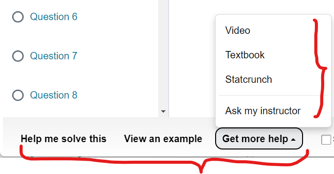
I shall use another approach to explain the question so you may understand.
Further, the solved examples on my websites (as listed in the Pacing Guides) contain some of the questions on your MLM assignments.
(vi.) There are unlimited attempts for your MLM assignments.
Typically, if you do a certain type of question three times without getting it correct, that question will be marked as incorrect.
But, no worries. Please click on Similar Question usually at the bottom right corner.
If you get a similar question correct, that question will be marked correct, and you get the credit for it.
Please use only a computer (laptop or desktop only; no tablets/iPads, no smartphones) with internet access.
(viii.) The final due date for all MLM assignments is the last day of class, or sometimes the day following the last day of class (depending on the day).
Please review the course syllabus for the exact date.
(ix.) After the final due date, please do not ask for an extension.
(x.) All MLM assignments are done in the Pearson learning management system via Canvas learning management system.
(b.) Project-based assessment:
Please choose only one of two projects: Measurements and Units or (exclusive or: XOR) Correlation and Regression
This is 10% of your final grade.
(i.) Please review the requirements, instructions, directions, and the projects from my previous students.
(ii.) If your application meets the project requirements, you should begin to work on your draft. It is highly recommeded that you submit your draft to me as soon as possible. Review your course syllabus for the due date to submit drafts.
(iii.) The project has two due dates as noted in the Tentative Class Schedule on your course syllabus and in the Pacing Guide. After the first due date, a zero grade will be entered in the Canvas gradebook for any student who has not satisfactorily completed the project, regardless of whether I am reviewing your draft or not.
(iv.) You may continue to work on your project after the first due date and submit it by the final due date. After the final due date, please do not request for an extension.
(v.) All projects (not drafts) are submitted in the appropriate area (forum) in the Canvas learning management system.
(c.) Discussion Board (DB) assessment: This is 30% of your grade.
(i.) Please review the Discussion Board in the course navigation link.
(ii.) The course is 16 weeks. Each week has a DB assessment (besides the week of Thanksgiving holiday). This implies there are 15 DB assessments.
(iii.) Each DB assessment requires a DB Post and a DB Response. At least one response to the initial post of your fellow student is required.
(iv.) Each DB assessment is 2% of your grade. The grading rubric is provided for you accordingly.
(v.) There is only one due date for the DB Post and only one due date for the DB Response. Any work past any of those due dates attracts a penalty according to the grading rubric.
Let me explain. It is important that you submit your initial posts on time (by Thursday) so your colleagues will have some time to respond to your post. Some students are very busy during the weekends. They might not be able to log in during weekends. Hence, they would like to complete the DB assessments on time. I am considering those students too.
(vi.) Let me explain the reason for having only one due date for each of DB Post and DB Response. Most students, typically do not continue the discussion past the week that it is due. They move on to the next discussion. Hence, if a student posts or responds past the due date, that post or response may not be read by another student.
What is the purpose of discussing with your colleagues if they will not read what you wrote? Do you understand what I mean?
(3.) I believe in giving my students a lot of opportunities to succeed: unlimited attempts for the MLM assignments; two due dates for MLM assignments; and two due dates for the project among others including my availability and willingness to answer your questions.
In that regard, I do not believe in bonus points. I do not believe in extra credit. Only the three types of assessments are the graded assessments.
Please do not ask for bonus points.
Please do not ask for extra credit.
Please do not ask for the grading to be curved. (normal distribution curve).
Please do not ask for re-dos after the project is graded. Those re-dos should be drafts. But once you submit your project, that is it.
Please do not ask for re-dos after the DB assessment is graded. Attend Office Hours/Live Sessions and ask questions.
Please ask questions instead.
What should you do?
What are some tips for succeeding in the class?
(4.) You control 60% of your final grade.
I control 40% of your final grade.
(a.) You are the one to decide the grade you want in the class. Make 100% on what you control: the MLM assignments; you earn a 60%...a D
Then, work with me by submitting your draft for the project on time. Work with me and address any issues till I give you the green light to submit your project...that should give you a 100% (in most cases)...which is 10% of your final grade. You now have: 60% + 10% = 70%...a C
Follow all the DB Requirements. Submit your initial post on time and address any comments I make as applicable. Even if I do not make any comments to your post, review the comments I make to the posts and/or responses of your colleagues. You can even address the comments I make to the post of your colleague as a substantive response, if applicable. Contact me via email and/or Live Sessions/Office Hours for any comment you do not understand. You can make enough points on the DB assessment to earn an A. in the course.
Making a grade of D is basically your entire/complete decision to make. You can also make a grade of A or B or C by reviewing my comments to your colleagues (based on the DB), and also based on the project samples and requirements provided to you. I understand some of you have busy schedules, hence your choosing to take an online class. But, please know that you can email me your available days and times. I will check my schedule and respond. We can work out something even if the day and time of the Live Sessions/Office Hours is not convenient for you.
(b.) Let us discuss how you can make a 100% on your MLM assignments:
The MLM assignments consists of 6 chapters.
The 6 chapters consists of 25 sections.
The 25 sections are further divided into 50 sections.
These 50 sections has 1146 questions.
25 main sections: 50 sections: 1146 questions.
Please note that some questions have children (sub-questions).
So, if we count each question and sub-question, the number is higher.
You have about 116 days (including Spring Recess week) and about 109 days (excluding Spring Recess week) to complete 1146 questions.
For 116 days: (Spring Recess week is included)
$\dfrac{1146}{116} = 9.879310345 \approx 10$ questions per day.
If you complete 10 questions (including any sub-questions) per day, you will complete all MLM assignments in 115 days.
If you complete 20 questions (including any sub-questions) per day, you will complete all MLM assignments in about 58 days.
For 109 days: (Spring Recess week is excluded; however, you are highly recommended to practice/solve Math questions daily to master the concepts/topics)
$\dfrac{1146}{109} = 10.51376147 \approx 11$ (rounded up) questions per day.
If you complete 11 questions (including any sub-questions) per day, you will complete all MLM assignments in about 105 days.
If you complete 20 questions (including any sub-questions) per day, you will complete all MLM assignments in about 58 days.
It is doable. It just requires your time and effort.
There is no graded work due during Thanksgiving week. Hence, you do not see any work in Week 10 of the Pacing Guide
However, it is important you practice Math daily to master it.
(c.) Please make sure you do all these assignments yourself.
(i.) Use the Learning Aids provided for you by Pearson MLM.
(ii.) Use my websites (especially the Solved Examples ... as noted in the Pacing Guides). I have solved, and I am still solving your MLM questions on my websites.
My explanations of the solutions are clear, as testified by some of my students. Please let me know otherwise.
(iii.) Do not use online calculators, even my own online calculators. Mr. C is even asking you not to use his own online calculators.
Here's the reason: if a calculator solves the question for you, did you really learn to solve the question?
You probably know the websites that have online calculators. I do not think you learn the topics/concepts if you use such online calculators.
(iv.) Do not use the mobile Mathematics apps that will solve the questions for you. You probably know the mobile apps including the one where you take the picture of the question with your smartphone and it gives the answer. I do not think you learn the topics/concepts if you use such mobile apps.
MyLab Math (MLM) Registration and Resources (eText and Multimedia Resources)
If you do not have the access code, you may get a temporary access without payment for 14 days. Please review the directions.
As specified in the course syllabus, the eText comes with the Access code.
The access code gives you access to the MyLab Math (MLM) assignments.
The access code contains the eText.
The access code also contains an accessible eText (for students who require accommodation).
So, you have an electronic textbook. Hence, a physical/hard copy textbook is not required.
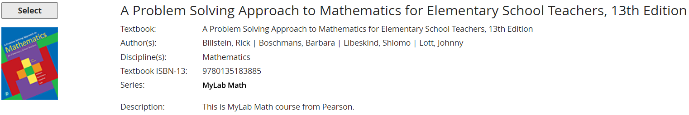
Recap:
(1.) The access code is required.
This is because you use the access code to access the MLM assignments.
(2.) The access code contains the eText/accessible eText.
(3.) The hard copy/physical textbook is not required. The hard copy does not give you access to the MLM assignments. So, it is not required.
Student Instructions:
May you please follow these instructions?The Instructor will have added both BryteWave and Access Pearson tools in the left navigation bar of your Canvas course.
Step 1: Pearson Access Code Reveal
- Log into Canvas and navigate to your course.
- Then choose the BryteWave link named BryteWave Course Materials.
-
You then will be taken to the BryteWave "My Shelf" page.
Click on the title you are looking to access under "Your Materials" to see the details of your product.
If you click on an ebook it will give you the option of "Read Now" for ebook only and for Pearson code reveal it will give you the option to see the code instead.
Step 2: Register for your Pearson MyLab Math
Your instructor should have enabled the Access Pearson tool on the left navigation bar in Canvas
- Click on their courseware icon (MyLab and Mastering) and follow the Yellow “Open Pearson”.
- Follow the prompts to create or sign into your Pearson account.
- When asked, enter the code from the Brytewave Code Reveal (Step 1) into the necessary input area to gain access to their course materials.
Access the eText/accessible eText
Step 1:

Step 2:
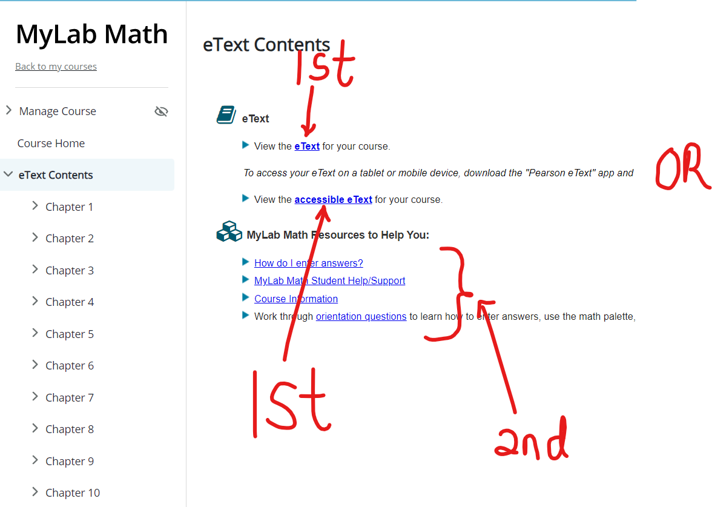
Step 3:

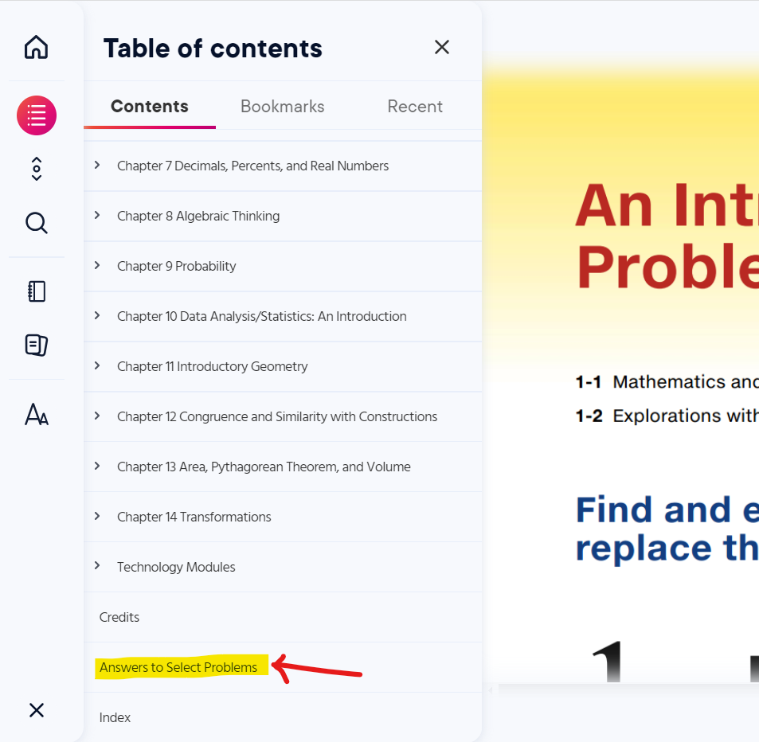
Access the Multimedia Resources
Step 4:

Student Evaluation of Faculty
Dear Students,
Greetings to you.
As you evaluate me and my teaching style on the Canvas course, I ask that you consider these questions
in addition to the survey questions.
Thank you for giving me the opportunity to teach the course.
It was nice working with you.
I wish you the best in your academic profession.
Thank you.
Samuel Dominic Chukwuemeka (SamDom For Peace)
B.Eng., A.A.T, M.Ed., M.S
Working together for success
Grading Method:
Grading Method: MATH 1010
Grading Method: MATH 2132
Grading Method: MATH 2133
Classroom/Learning Environment: Canvas course management system.
Course Assessments: MyLab Math (MLM) assignments, Discussion Board (DB) assessments, and
Project-based Learning assessment (Piecewise Function Project)
Direct forms of communication: Office Hours/Live Sessions, Comments to your DB Posts and/or
Responses, individualized Zoom sessions, Emails, and Google Voice text messages and calls.
Indirect forms of communication: Course announcements, Websites (Notes, Videos, and Resources
among others).
Course Contents
Please review the:
MATH 1010 Course Outline
MATH 2132 Course Outline
MATH 2133 Course Outline
Those are the basic topics that WNMU require that I teach.
(1.) Did I cover those topics: teach the topics and/or provide resources for the topics?
Resources include your textbooks (eText and resources), my websites (including notes/videos/resources)
(2.) Did I cover other necessary topics that is relevant for you to succeed in your profession?
(3.) Did the assessments demonstrate the application of the topics?
(4.) Did the contents and assessments demonstrate important skills such as critical thinking, use of
technology, creativity, and organization among others?
Teaching and Learning
(5.) Did you acquire any knowledge from me?
(6.) Did you acquire sufficient knowledge, or more than sufficient knowledge from me?
(7.) Did you acquire any knowledge from any of your colleagues because of how the course was set up?
(8.) Did you acquire sufficient knowledge, or more than sufficient knowledge from any of your colleagues
because of the way the course was set up?
(9.) Did I provide effective feedback on the draft submissions and the main submissions of your
project?
Did you acquire any knowledge based on my feedback?
(10.) Did I provide comments/effective feedback for your DB Post and/or Response?
Did you acquire any knowledge based on the feedback?
(11.) Did you get any feedback for any of the questions on your MLM assignments?
Did you acquire any knowledge based on that feedback?
(12.) Did any of the feedback help you improve in any way?
In other words, was the feedback useful to you in any way?
(13.) Did you have enough support to ensure the successful completion of the course?
Were your questions answered?
Did you have enough resources/learning aids?
(14.) Did I provide a safe and conducive environment for learning?
(15.) Was the Grading Method fair?
Pacing Guide
(16.) Were you given enough time to learn the contents?
(17.) Were you given enough time to complete the assessments?
Consider the fact that you were given two due dates for the MLM assignments and the Project; and
that there
was no penalty for late work after the first due date.
Professionalism
(18.) In all our communication (both direct and indirect), did I act professionally?
(19.) In all our communication (both direct and indirect), did I use a respectful tone?
(20.) What do you like or dislike about our communication?
Personality
(21.) Based on your experience with me (taking the course with me and communicating with me among
others), how
would you describe my person?
Do I give a lot of work?
Do I give a lot of explanations?
Do I have a lot of expectations for my students?
Do I really want you to learn?
Do I really want you to succeed?
Do I ask a lot of questions?
Do I answer questions with questions sometimes?
During those times, please note that it is a teaching technique.
It is never meant to disrespect you. I do not disrespect my students. I respect them.
It is a technique to guide you to review directions/concepts, and explain what you do not
understand.
Would you take another course with me? Why or why not?
Did your views/perception about me affect you in completing this course successfully or unsuccessfully?